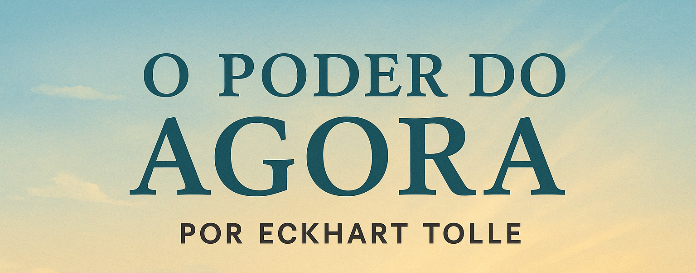

📚 Biblioteca de Saúde Mental
Uma seleção cuidadosa de livros gratuitos sobre bem-estar mental e desenvolvimento pessoal.

O Poder do Agora
Um guia para a transformação pessoal que nos ensina a viver no presente e encontrar paz interior.
Download Gratuito.png)
Ansiedade: Como Enfrentar o Mal do Século
Uma análise profunda sobre ansiedade e estratégias práticas para lidar com ela no dia a dia.
Download Gratuito.png)
Mindfulness para Iniciantes
Aprenda técnicas simples de mindfulness para reduzir o estresse e viver com mais consciência.
Download GratuitoAutocuidado na Prática
Um guia prático com exercícios e reflexões para melhorar sua saúde mental no dia a dia.
Download GratuitoO poder do Hábito
Um guia prático com exercícios e reflexões para melhorar sua saúde mental no dia a dia.
Download GratuitoManual de Primeiros Socorros
Um guia prático com exercícios e reflexões para melhorar sua saúde mental no dia a dia.
Download Gratuito